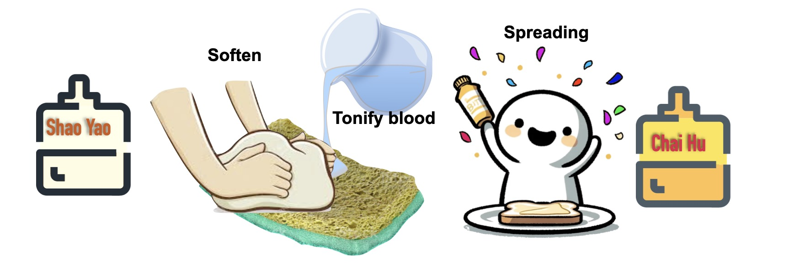

시호제제
시호라는 약재를 잘 몰라서 잘 사용하지 못하는 경우가 많습니다. 시호의 가장 중요한 역할은 간기를 소통시키는 작용입니다. 소설기능이라고 합니다. 또 가장 중요한 시호의 성질은 가볍다 그리고 서늘하다는 점입니다. 합쳐서 말하면 가볍고 서늘하며 간기을 소통시키는 역할을 하는 것이 시호입니다
시호의 두 가지 핵심 작용
화해소양 (和解少陽)
몸의 중간층(반표반리)에 걸린 열을 풀어주는 작용
소간해울 (疏肝解鬱)
스트레스 등으로 뭉친 간의 기운을 소통시키는 작용
가볍고 차갑다(화해소양)
시호의 성질과 역할을 이야기할 때 가볍고 차갑다라고 그랬는데, 이게 선뜻 잘 이해가 안 갈 거예요. 여러분들이 시호를 배우는 데 제일 어려운 점이 시호 제제가 가장 활발하게 사용된 게 상한론이거든요. 근데 이제 상한론에 나온 처방을 오장변증에 의해서 이렇게 후세방, 후세방적으로 이해하려고 하니까 혼란스러워 집니다. 자꾸 견강부회, 억지로 해석하는 이론이 갖다 붙고 그러니까 교수도 뭔 얘기인지 모르고 지껄이고, 듣는 사람도 혼란스럽고, 괜히 죄 없는 시호만 여러분들한테서 멀어지게 된 거예요. 시호 아주 간단합니다. 사실 가볍고 차갑다라는 이런 말들을 책에서 보면 여러분들이 이걸 추상적으로 받아들이거든요. 그런데, 이게 어떤 약의 성분 뭐 이런 거랑 똑같은 거에요. 아주 구체적인 사실입니다. 가볍고 차갑다라는 것이 간단하게 말해서 열병에 쓰고 표증에 쓴단 말이에요. 가볍고 서늘하다. 이 느낌을 추상적으로 말고 그냥 어떤 음식의 어떤 성질을 이해하듯이 여러분들 마음속에 한번 실체로 생각해봐요. 서늘하다는 건 열증을 식히는 역할을 한다는 뜻이에요. 그런데, 청열제와는 좀 다르고, '계지 마황처럼 따뜻하지는 않다' 정도로 이해하면 됩니다. 가볍다라는 것은 약의 작용 부위가 양의 부위이고 또 표증 쪽에 가까울 때 많이 쓰이는 그런 경향이 있다는 뜻입니다. 그래서, 표증같은 열증에 쓰는 겁니다. 이런 성질을 마음에 이해못하면, 왜 이동원 선생님이 보중익기탕에 시호를 썼는지 이해를 못 하는 거예요. 왜 보중익기탕, 중초를 보하는 처방에 시호가 들어갔을까? 가볍고 열을 내려주는 성질 때문에 들어간 거예요. 보중익기탕이 원래 기허 발열을 치료하려고 만든 처방이거든요. 발열을 치료하는데, 청열제는 아니라고 했죠? 시호는 열을 발산시켜서 치료하는 약이거든요. 마치 계지나 마황처럼 말이에요. 계지나 마황도 발열을 치료합니다. 이 부분 당혹스러워 하는 사람이 많은데, 원래 상한론에서 계지탕, 마황탕으로다 표증발열 치료했습니다. 그런데, 시호는 계지 마황처럼 발한 해표하는 것이 아니라, 약간 서늘한 성질을 갖고 발산시켜서 열을 치료한다는 의미에요.
처방속에서 시호의 역할: 소시호탕 - 반표반리의 사기를 발산시켜 풀어준다
먼저 소시호탕부터 한번 보죠. 소시호탕은 여러분들이 이해하는 데 매우 어려움을 겪습니다. 자꾸 후세방적으로 해석하려고 해서 그런데, 이건 장중경 선생님이 어떻게 처방을 썼는가 그 패턴을 이해하시면 되거든요. 장중경 선생님이 먼저 중초를 다스릴 때 반하와 인삼을 사용하셨습니다. 그래서 소시호탕에 반하, 인삼이 되게 중요해요. 소시호탕에 소화기 증상이 겸해져 있죠. 외감 증상, 그니까 소양경병 증상에 속이 더부룩하고 소화가 안 되고 피곤하고 설사하고 그게 반하, 인삼이 다스리는 증상이에요. 대표적으로 반하, 인삼이 들어간 처방이 반하사심탕입니다. 선복대자탕도 있고. 그럼 여기서 시호가 중요한데, 그 반하, 인삼 말고 또 다른 역할을 하는 두 한약이 '시호랑 황금'이에요. 그래서 시호랑 황금이 들어가서 우리가 얘기하는 소양경의 한열왕래를 치료하는 거예요. 주로 장중경 선생님은 황금을 지금 후세방에서 해석하듯이 열을 꺼주는 것보다는 답답한 것을 쓸어내리는 데 사용하셨습니다. 예를 들어서 사심탕 있죠. 사심탕, 삼황사심탕, 대황, 황금, 황련. 이게 다 내려보내는 약이에요. 그래서 이름도 사심인 거예요. 근데 사심탕, 반하사심탕의 황금, 황련, 삼황사심탕의 황금, 황련 대신에 시호랑 황금을 결합했단 말이에요. 그건 뭐냐. 이 답답한 열을 내려주는데 좀 더 양, 표의 부위의 열을 내려준다는 얘기예요. 시호가 발산하고 가볍고 또 서늘하거든요. 그래서 이 시호, 황금 제제는 어디다 쓰느냐. 표증도 아니고 리증도 아닌 데 쓰기 적합한 약이 되는 거예요. 여러분 생각해 보세요. 이 표의 열이 있다 그러면은 뭘로 풀어줘야 돼요? 해표해서 풀어주잖아요. 그래서 계지, 마황 제제나 박하, 담두시 이런 걸로 풀어준단 말이에요. 근데 그런 걸로 풀어주기에는 너무 안으로 들어왔어요. 그런데, 석고나 황금, 황련을 쓰기에는 또 너무 거죽에 있어요. 이게 바로 소양이라는 거예요. 그 소양경병, 반표반리에 있는. 그니까 리열로 들어간 것은 대황, 석고, 황련, 황금을 써야겠지만 아직 그렇지도 않고 그렇다고 계지, 계지, 마황으로 몰아내기도, 해표하기도 어려운 상황에서 사용하는 게 '시호'라는 거예요. 그래서 시호의 주요 증상이 반표반리가 됩니다. 한열왕래가 되는 거고. 이걸 문자 그대로 자꾸 한열이 말라리아처럼 교대로 온다 이렇게 생각하면 안 돼요. 이게 오한인지 발열인지, 바꿔 말해서 태양인지 양명인지 헷갈리는 상황에 쓰는 게 소시호탕이예요. 소양이라는 것은 태양과 양명의 중간입니다. 양명이라는 것은 리열이고요. 태양은 표증입니다. 그 사이에 있는 것을 시호랑 황금으로 열을 꺼주면서, 황금으로 리열을 치료하고 시호로 발산시켜서 열을 꺼주면서 반하, 인삼으로 속을 다스려주는 처방이 소시호탕이거든요. 여기서 시호의 역할을 한번 가만히 생각해 보십시오. 한약이 추상이 되면 안되요, 마치 고추를 먹으니 땀이 나는 구나 하듯 실제 역할을 그려보셔야 합니다.
간의 기운을 풀어준다(소간해울)
간의 소설 기능을 도와준다는 것은 그렇게 어렵지 않죠. 그래서 간기울결, 스트레스, 요런 것들에 또 시호가 많이 쓰이게 돼요.
처방속에서 시호의 역할: 사역산 - 단단한 간을 부드럽게 풀어준다
두 번째 처방이 사역산입니다. 여기서 사역산이 소소음병 처방이다 이런 생각은 일단 버려버리세요. 여러분들이 그 무슨 병 처방이다라는 생각은 완전히 잘못된 거예요. 자, 이것도 많이 얘기했었는데, 뭐 예를 들어서 도핵승기탕 같은 게 태양경병 약으로 배운단 말이에요. 실제 양명병, 양명경병 약이에요. 오수유탕 같은 거는 한 세 군데, 네 군데 정도 나와요. 그 어떤 처방이 어떤 경병에 이렇게 딱 1대1 매치될 수 있는 것이 전혀 아닙니다. 그런 생각 일단 버려버리시고요. 이 사역산이라는 약은 '시호랑 작약'이 짝을 이룹니다. 소시호탕은 시호랑 황금이 짝을 이뤘죠? 그래서 발산시키면서 열을 꺼주는 방향으로 쓰였는데, 사역산은 시호랑 작약이 들어가서 간의 울결을 풀어주는 약입니다. 그래서 사역산에서 나온 처방들이 굉장히 많아요. 여러분들 잘 아시는 소요산도 사역산에서 나온 처방이고, 시호소간산도 사역산에서 나온 처방이고, 혈부축어탕도 사역산에서 나온 처방이고. 그래서 시호, 작약의 콤비네이션은 앞으로도 간의 기가 울결돼 있다 그러면 가장 1차적으로 여러분들이 선택하셔야 되는 두 가지 약재입니다. 그럼 간의 기를 풀어주는데 왜 시호, 작약이 중요한가. 이동원 선생님이 작약에 대해서 이런 말을 했어요. '간이 뭉쳐서 단단해진 것을 풀어줄 때는 혈을 보해줘서 촉촉하게 해서 그 단단한 것을 풀어야 한다.' 그래서 작약을 쓰는 것이다. 이동원 선생님 말 속에 간의 기가 뭉쳐서 단단해진 것은 혈을 보해줘서 푼다라는 말을 한번 보십시오. 작약은 우리가 보혈제로 배우거든요. 근데 같은 보혈제라도 작약은 작용 부위가 간이에요. 이게 그래서 간장혈, 간이 혈을 저장하는 것과 관련이 있거든요. 그래서 혈이 없으면 간이 푸석푸석해지고 단단해집니다. 그래서 간기울체가 되요.예요. 사실 간장혈과 간주소설은 서로 연관된 기능이에요. 여러분들이 뭐 접시 닦는 스펀지 같은 게 건조해지면 딱딱해지잖아요. 그런 게 간의 혈이 부족해서 간이 단단해진 거예요. 그런 걸 풀어주는 게 작약이라는 겁니다. 그래서 작약은 간기울결인데 혈허가 동반한 것을, 이렇게 부드럽게 녹녹하게 녹여주는 역할을 하는 게 작약이에요. 시호는 어때요? 시호는 오히려 좀 반대예요. 작약은 보혈하는 거 보니까 성질이 좀 그래도 중간보다 무겁다라고 볼 수 있죠. 시호는 가벼워요. 작약은 촉촉하게 해서 간을 풀어주는데, 시호는 그 막힌 것을 뚫어줘서 간을 풀어줍니다. 그래서 우리가 spread liver라고 영어로 쓰는데, spread butter, 버터를 이렇게 부드럽게 해서 펴 바르는 게 작약의 역할이라면, 이 색종이 같은 걸 spread, spread confetti라고 해요. 그런 게 시호의 역할이에요. 그래서 밖으로 날려버려 주는 게 시호고, 안에서 이것이 잘 분해되도록 녹녹하게 해주는 게 작약이에요. 그래서 시호, 작약이 들어가면 간기울결을 풀어주는 데 최고의 팀이 되는 겁니다. 그게 사역산이에요. 그럼 이름은 왜 사역산인가? 손발 찬 거 치료해서 그래요. 사역이라는 게 사지를 뜻하는 거예요. 기가 거꾸로 가서 손발이 차갑거든요. 이거는 뭐 양이 허해서 뭐 실한이 있어서가 아니고, 기가 막혀 가지고 피가 안 가서 손발이 차지는 거예요. 우리 스트레스 받으면 손발 차지는 거, 그걸 치료하는 게 사역산이에요. 시호, 작약이 들어가면 '작약은 단단한 것을 녹여서 풀어주고(간장혈), 시호는 밖으로 소통시켜 간기울결을 풀어주는구나(간주소설)'하고 생각하면 되요. 간장혈과 간주소설의 두가지 간의 가장 중요한 기운을 도와주니, 모든 간병에는 시호와 작약이 밀어주고 당겨주는 양방향의 작용으로 중요하게 사용되는 겁니다.

정리
여러분들이 보는 시호 제제는 대부분 이 두 가지 처방에 기반합니다. 이 두 가지 처방만 알면 사실 시호 제제를 다 아는 거예요. 사실 시호의 역할은 한 가지예요. 두가지 다른 처방과 응용이지만, 시호는 하나이고 그 하나의 시호를 이해하세요. 시호는 주로 작용 부위가 간이면서 성질이 가볍고 차갑다. 요걸 좀 머릿속에 담아두시면 됩니다.
다시 한번 정리해 볼까요? 시호는 성질이 가볍고 차갑고 간의 소설 기능을 도와준다. 대표 처방으로는 사역산과 소시호탕이 있다.
소시호탕은 반표반리, 표증도 아니고 리증도 아닌 열을 풀어준다.
사역산은 시호, 작약이 들어가서 간이 단단하게 뭉친 것을 풀어준다.
요렇게 정리하시면 시호 제제를 자신 있게 잘 사용할 수 있을 겁니다.
Understanding Chai Hu in Formulas
Many people cannot properly use the herb Chai Hu because they are not very familiar with its fuction and properties. Its primary function is to spread the liver qi, which supports the liver’s dispersing and draining function (疏泄). Chai Hu is characterized by its light and cooling properties. In short, it is an herb that is light, cool, and helps to spread(soothe) the liver qi.
The Two Core Functions of Chai Hu
Harmonize Shaoyang (和解少陽)
Resolves heat lodged in the half-exterior, half-interior layer of the body.
Spread the Liver (疏肝解鬱)
Spreads liver qi that has become stagnant due to stress or other factors.
Light and Cool (Harmonizing Shaoyang)
When we talk about the properties and roles of Chai Hu, saying it's light and cool might not be immediately easy to understand. When you see words like "light and cool" in books, you tend to take them abstractly. However, this is just like the ingredients of a medicine, it's a very concrete fact. Simply put, "light and cool" means it's used for febrile diseases and exterior patterns. Light and cool. Try to think of this feeling not as an abstraction, but as a reality in your mind, just like you understand the properties of a certain food. "Cool" means it plays a role in cooling heat patterns. However, it's a bit different from heat-clearing herbs; it's better to understand it as 'not as warm as Gui Zhi or Ma Huang'. "Light" means that the herb's site of action is in the yang aspect and that it tends to be used more often when a condition is closer to an exterior pattern. Therefore, it's used for heat with exterior patterns. If you can't understand these properties in your heart, you won't be able to understand why Li Dongyuan (李东垣) used Chai Hu in Bu Zhong Yi Qi Tang (补中益气汤). Why was Chai Hu included in Bu Zhong Yi Qi Tang, a formula that tonifies the middle jiao? It was included because of its light and heat-reducing properties. Bu Zhong Yi Qi Tang was originally created to treat fever from qi deficiency. It treats fever, but I said it's not a heat-clearing herb, right? Chai Hu is an herb that treats fever by disseminating(spreading, dispersing) it. Just like Gui Zhi or Ma Huang. Gui Zhi and Ma Huang also treat fever. Many people are perplexed by this part, but originally, in the Shang Han Lun, exterior pattern fevers were treated with Gui Zhi Tang and Ma Huang Tang. However, Chai Hu doesn't induce sweating to release exterior like Gui Zhi and Ma Huang; it treats fever by disseminating it with a slightly cool property.
Role of Chai Hu in formulas: Xiao Chai Hu Tang (小柴胡汤)
First, let's look at Xiao Chai Hu Tang. You have a lot of trouble understanding Xiao Chai Hu Tang. This is because you keep trying to interpret it in the style of later-generation formulas, but you just need to understand the pattern in which Zhang Zhongjing (张仲景) wrote his formulas. Zhang Zhongjing first used Ban Xia and Ren Shen when treating the middle jiao. That's why Ban Xia and Ren Shen are very important in Xiao Chai Hu Tang. Xiao Chai Hu Tang is accompanied by digestive symptoms. Along with external symptoms, that is, Shaoyang channel disease symptoms, you have bloating, indigestion, fatigue, and diarrhea; those are the symptoms that Ban Xia and Ren Shen treat. A representative formula containing Ban Xia and Ren Shen is Ban Xia Xie Xin Tang (半夏泻心汤). There is also Xuan Fu Dai Zhe Tang (旋覆代赭汤). Now, Chai Hu is important here, but the two herbs that play a different role from Ban Xia and Ren Shen are 'Chai Hu and Huang Qin'. So, the inclusion of Chai Hu and Huang Qin treats what we call the alternating chills and fever of the Shaoyang channel. Mainly, Zhang Zhongjing used Huang Qin not so much for clearing heat as interpreted in later-generation formulas, but for clearing away irritability and congestion in chest. For example, there's Xie Xin Tang (泻心汤). Xie Xin Tang, San Huang Xie Xin Tang (三黄泻心汤), with Da Huang, Huang Qin, and Huang Lian. These are all herbs that send things downward, heat or feces. That's why the name is Xie Xin (draining the epigastrium). But in Xiao Chai Hu Tang, instead of the Huang Qin and Huang Lian of Ban Xia Xie Xin Tang or San Huang Xie Xin Tang, he combined Chai Hu and Huang Qin. What does that mean? It means that while it reduces this heat in chest, it reduces heat from a more yang, exterior aspect. Chai Hu disseminates, is light, and also cool. So where is this Chai Hu and Huang Qin formula used? It becomes an herb suitable for use in a condition that is neither an exterior pattern nor an interior pattern. Think about it. If there is heat in the exterior, what should you use to resolve it? You release the exterior to resolve it. So you use formulas with Gui Zhi or Ma Huang, or herbs like Bo He or Dan Dou Chi. But the pathogen has come in too deep to be resolved by such things. However, it's still too much on the surface to use Shi Gao, Huang Qin, or Huang Lian. This is exactly what Shaoyang is. It's in the Shaoyang channel disease, half-exterior, half-interior. So, for interior heat, you must use Da Huang, Shi Gao, Huang Lian, or Huang Qin, but it's not yet at that stage, and it's also a difficult situation to expel it by releasing the exterior with Gui Zhi or Ma Huang. That's when you use 'Chai Hu'. That's why the main indication for Chai Hu becomes half-exterior, half-interior. It becomes alternating chills and fever. You shouldn't think of this literally as chills and fever alternating like in malaria. Xiao Chai Hu Tang is used in a situation where it's confusing whether it's chills or fever, or in other words, whether it's Taiyang or Yangming. Shaoyang is the intermediate stage between Taiyang and Yangming. Yangming is interior heat. Taiyang is an exterior pattern. The formula that cools the heat located in between using Chai Hu and Huang Qin—cooling interior heat with Huang Qin and disseminating to cool heat with Chai Hu—while also treating the interior with Ban Xia and Ren Shen, is Xiao Chai Hu Tang. Take a moment to think carefully about the role of Chai Hu here. Herbs should not become an abstraction; you should try to picture their actual role, just as you think, "I'm sweating because I ate a chili pepper."
Releases the Liver's Qi (Resolves Liver Depression)
Helping the liver's dispersing and draining function isn't that difficult to understand. That's why Chai Hu is also frequently used for things like liver qi stagnation and stress.
Role of Chai Hu in formulas: Si Ni San (四逆散) - Softens and releases a hardened liver.
The second formula is Si Ni San. For now, just discard the thought that Si Ni San is a Shaoyin disease formula. The idea that a certain formula is for a certain disease is completely wrong. Now, I've talked about this a lot, but for example, you learn that a formula like Tao He Cheng Qi Tang (桃核承气汤) is for Taiyang channel disease. It's actually a Yangming channel disease herb. A formula like Wu Zhu Yu Tang (吴茱萸汤) appears in about three or four different places. It's not at all possible for a certain formula to have a one-to-one match with a certain six stages. So, first, get rid of that idea. In the formula Si Ni San, 'Chai Hu and Bai Shao' form a pair. In Xiao Chai Hu Tang, Chai Hu and Huang Qin formed a pair, right? So it was used in the direction of disseminating while cooling heat. But Si Ni San contains Chai Hu and Bai Shao, making it a formula that resolves the liver's stagnation. There are a great many formulas that come from Si Ni San. The well-known Xiao Yao San (逍遥散) comes from Si Ni San, Chai Hu Shu Gan San (柴胡疏肝散) comes from Si Ni San, and Xue Fu Zhu Yu Tang (血府逐瘀汤) also comes from Si Ni San. Therefore, the combination of Chai Hu and Bai Shao is the primary pair of herbs you should choose whenever there is liver qi stagnation. So why are Chai Hu and Bai Shao important for releasing liver qi? Li Dongyuan said this about Bai Shao: 'When the liver is clumped and hardened, you must tonify the blood to moisten it and thereby release that hardness.' That is why Bai Shao is used. Look at Li Dongyuan's words: "a liver that is clumped and hardened is released by tonifying the blood." We learn Bai Shao as a blood-tonifying herb. But even among blood-tonifying herbs, Bai Shao's site of action is the liver. This is related to how the liver stores the blood. So, if there is no blood, the liver becomes dry and hard. This leads to liver qi stagnation. In fact, the liver storing the blood and the liver's dispersing and draining function are interrelated functions. You know how a dishwashing sponge gets hard when it dries out? That's what a liver hardened due to insufficient liver blood is like. The herb that releases that is Bai Shao. So, Bai Shao is for liver qi stagnation accompanied by blood deficiency, and it plays the role of gently and moistly melting it. What about Chai Hu? Chai Hu is rather the opposite. Since Bai Shao tonifies blood, its property can be seen as heavier than neutral. Chai Hu is light. Bai Shao releases the liver by moistening it, while Chai Hu releases the liver by unblocking what is stagnated. So, we use the English "spread liver." If Bai Shao's role is to "spread butter," making it soft and spreading it, then Chai Hu's role is what they call "spread confetti." So, Chai Hu is what flies things outward, and Bai Shao is what moistens things inside so they can break down well. That's why when Chai Hu and Bai Shao are included, they become the best team for resolving liver qi stagnation. That is Si Ni San. Then why is it named Si Ni San (Frigid Extremities Powder)? It's because it treats cold hands and feet. Si Ni means the four limbs. The hands and feet get cold because qi flows counterflow. This isn't because yang is deficient or there is excess cold; it's because qi is blocked, so blood can't reach the limbs, making the hands and feet cold. The cold hands and feet we get when we're stressed—that's what Si Ni San treats. When Chai Hu and Bai Shao are included, you can think, 'Bai Shao melts and releases hardness (liver stores the blood), and Chai Hu communicates to the outside to release liver qi stagnation (liver's dispersing and draining function)'. Since they help the two most important functions of the liver, storing blood and its dispersing and draining function, Chai Hu and Bai Shao are used importantly in all liver diseases with their two-way action of pushing and pulling.
Summary
Most of the Chai Hu formulas you see are based on these two formulas. If you know just these two formulas, you essentially know all the Chai Hu formulas. In fact, the role of Chai Hu is just one thing. Although there are two different formulas and applications, Chai Hu is one, and you should understand that one Chai Hu. Chai Hu's main site of action is the liver, and its properties are light and cool. You just need to keep this in mind.
Let's summarize again, shall we? Chai Hu's properties are light and cool, and it helps the liver's dispersing and draining function. Representative formulas are Si Ni San and Xiao Chai Hu Tang.
Xiao Chai Hu Tang resolves heat that is in the half-exterior, half-interior, being neither an exterior pattern nor an interior pattern.
Si Ni San contains Chai Hu and Bai Shao to release a liver that has become hard and clumped.
If you organize it like this, you will be able to use Chai Hu formulas confidently and well.